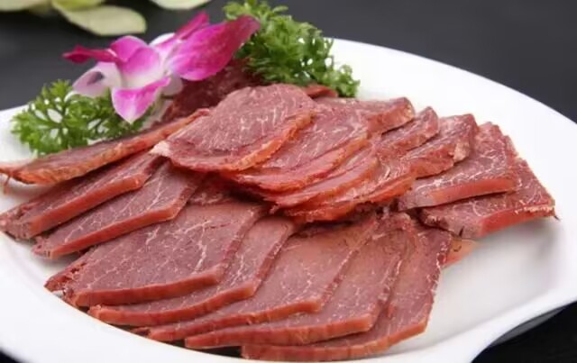
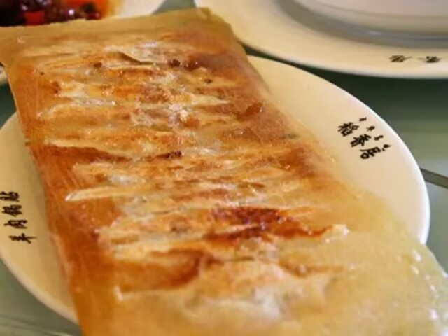
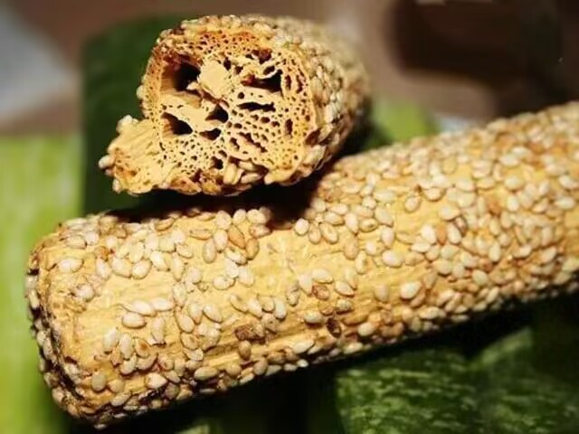

全部分类
热门搜索
大槐牛肉


新密市大隗镇五香牛肉，历史悠久、配方独特、工艺严密、加工精细，制作后具有色鲜、味美、筋烂、肉面等特点。食时气息芳香、余味悠长，在中州大地享有盛名。
三鲜莲花酥三鲜莲花酥，开封名吃，是用白面为主料制作而成的一种点心，点心内的馅由三种不同的馅配合制成。味道芳香酸甜，糕形如含苞初放的莲花，色调淡雅逼真，形象惟妙惟肖.三鲜莲花酥，形态如同含苞初绽的莲花，味道芳香、酥松可口，是开封著名的传统糕点。
开封小笼灌汤包
开封小笼灌汤包是河南省开封市一道著名地方风味小吃。已有百年历史，创始人是黄继善。现有国营第一楼包子铺经营，是著名风味面点。小笼灌汤包皮薄馅大，灌汤流油，成品出笼后提起来像灯笼，放下去像菊花，小巧玲玲，十分可人。
开封锅贴 开封锅贴是河南省开封市的一道传统特色名菜，属于豫菜系，该菜品以其选料严谨，制作精细，品质优美而闻名古城。锅贴灌汤流油鲜美溢口，再配上香醋、蒜瓣，别有风味
曹马芝麻糖 曹马芝麻糖是河南安阳县崔家桥乡曹马村传统的汉族名吃，当地芝麻糖闻名全国，其独特技艺已历五百余年。这种芝麻糖质地细腻，酥、薄、轻、空、无渣适口，不粘牙，不粘手。